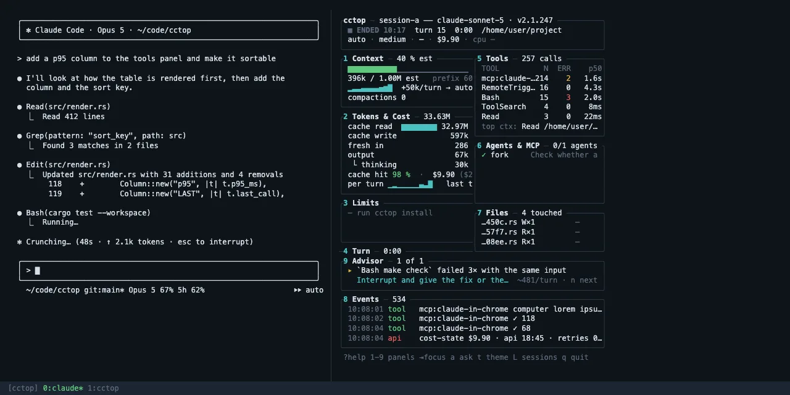

Claude Code shows you the conversation. cctop shows you what is underneath it: how full the context is and when it will be compacted, what each turn costs and why, how close you are to your usage limit, what the model is waiting on right now, which tools are filling the context — and one concrete change to make about it. Live, next to your session, without touching it.
/cctop — docked inside Claude Code when the build allows it, otherwise as a split of your terminal beside it. One command; it decides.~/.claude, plus the process tree. It changes nothing about your session.brew install tomstagl/tap/cctopor cargo install cctop · then claude plugin add tomstagl/cctop and type /cctop
The Turn panel splits the wait into model time, the tool that ran, the hooks that fired, and how long the model sat waiting for you to answer a permission prompt.
Tokens & Cost shows every token by price class and the cache-hit ratio. Below 80 % something is rewriting the prefix on every turn; the Advisor names the usual culprits.
Limits draws the 5-hour and 7-day windows, the countdown to each reset, and a forecast from the last half hour of use — including whether you'd run out first.
Tools shows how many tokens each tool pushed into the context and names the single largest results. Files flags the reads that brought nothing new. Context forecasts the next compaction.
The coach turns what it sees into one nudge at a time: the evidence, the change, and what it saves. Thirty-five rules, every trigger structural — a tool result, a denial, an interrupt, an API error, a git operation — never a keyword in your prompt, and no model call. Ask your session about any of them in plain words.
A header that never moves and one body that fills every remaining row. Row 1 says what state the session is in. Rows 2–4 are six cells — context, limits, cache, spend, work, tools — each a target whose digit opens its body in place: ○ quiet, ◐ worth a look, ● act, on the reading that has a threshold. Row 5 is the act line, the one nudge the coach keeps, wrapped rather than cut. Row 6 names the open body and the way home. Below the figure, what each cell and each body tells you and what you would do about it.
cctop claude-sonnet-5 · turn 6 · 9h 25m · ENDED 23:28 · /home… ● COMMITTING 8h 40m
1: ctx 14% · 425k left 2: 5h — · no status line 3: cache 59m≈ · 1h TTL
4: spend $18.7 · ≈$1.01/h 5: ✓ python3 -… 9h01 · re… 6: 140 calls · 6 err
▸ `cd lorem_ipsum_dolor_sit_amet…` blocked the turn… — queue: 'run a: advisor
builds and test suites longer than a … LATER · turn 6
─── events ─────────────────────────────────────────────────── 0: home · ? keys ───
23:29 api cost-state $18.75 · api 22:14 · retries 0:00
23:29 note /clear · continued in a new session
23:28 coach LATER A10 fired · `cd lorem_ipsum_dolor_sit_amet…` blocked the turn…
23:28 tool Bash ✓ 49
23:28 tool Bash git commit -m "$(cat lorem_i lorem lore lor lorem_i lorem_ip l…
23:27 tool Bash ✓ 16
23:27 tool Bash git push lorem_ lore 2>&1 ▶
23:27 tool Bash ✓ 32
23:27 cost model opus-5 → sonnet-5
23:27 tool Bash git commit -m "$(cat lorem_i lorem_ipsu lorem_i lore cctop lor…
23:25 tool AskUserQuestion ✓ 83
14:49 tool AskUserQuestion ▶
14:49 api API error: invalid_request 400
14:49 compact compacted auto 567k → 230k in 1:20
14:48 note interrupted after 6 calls
14:47 api API error: request failed
14:46 tool TaskUpdate ✓ 5
14:46 tool TaskUpdate completed ▶How to read itTop to bottom, then one digit. The cells are the five questions a glance asks: is it working (the phase cell), am I near a wall (context, limits, cache), what is this costing (spend), is the work converging (work, tools). The act line is the one change to make now. The body is the answer behind whichever cell you pressed — events, the timeline, is home.
ColourGreen is fine, amber is worth a look, red is act now — and only ever a threshold. Composition — what the context is made of — uses the theme's own hue from dim to bright: the bright end is the part you can move.
The model, the turn number, how long the session has run, ENDED and the time when the process is gone — then the phase cell: EXPLORING, IMPLEMENTING, VERIFYING, COMMITTING, PLANNING, DELEGATING, BROWSING, OPS, IDLE or ◆ WAITING when a question or a permission prompt is open — with the turn's elapsed time beside it.
DoWAITING and you didn't notice? Look at the session — nothing happens until you answer, and the cache entry keeps expiring on its clock.
ctx: how full the window is and what is left before autocompact — amber inside Claude Code's own band, red at the block. 5h: the 5-hour window and its reset. cache: how long the entry that holds your context stays warm, and the TTL. spend: the session's whole spend and the burn rate. ✓ / ✗: the last check and the rework light's state — ok, 3 open, 4 unchecked. calls: the tool calls so far and the errors among them.
DoRead the reds first; the act line under the cells is usually about one of them. Press the digit for the body behind it; c opens the coach card with the four lights and the why behind each.
The coach's slot, whole: what it found and the change to make, with its class — NOW interrupts, NEXT waits for the turn's end, LATER waits for a free slot — and the turn it fired on. A permission prompt or a question pre-empts it in red. While nothing has fired it reads the state line: the steer window, the silent run.
Doa opens the advisor body with the evidence; there Enter acts on it, x snoozes it for five turns, X for the session. Snooze the wrong ones: three in a row and the rule stays quiet.
The open body's name, 0 home (the events body) and ?, which expands the line into the body's keys and the global ones, and collapses it again. Console has no footer: the body takes the last row.
How much of the window is in use, the autocompact threshold and what is left. Then the five slices of the context as bars, in the order of what you can do about them: the prefix and the harness (fixed for this session), retained thinking (dropped at the next boundary), the tool inputs and the tool results — the lever you actually control, and usually the biggest. Then compactions, re-reads, stale files and the turns until autocompact.
DoAt "autocompact in ~3 turns", finish the step you are on and write a short hand-off note. When results dominate, hand the next read-heavy stretch to a subagent; when the fixed part does, trim CLAUDE.md and disable MCP servers this project doesn't use.
Your account's rolling 5-hour and 7-day usage as meters with the countdown to each reset, whether the trend runs out before the reset, the model's weight — why the bar moves faster than the dollars — and the share of usage above 150k context. Account-wide: other sessions and subagents draw from the same pool.
DoProjected to run out before the reset? Move exploration and summaries to cheaper subagents, or pause the heavy work until the window clears.
How long the entry that holds your context stays warm and its TTL, the misses so far with the last cause, the hit ratio, and the re-write at stake if it goes cold before the next call.
DoReply before the countdown ends, or the next call pays the re-write. A hit ratio under 80 % means something is changing the prefix every turn — a hook or status line that prints the time is the usual suspect.
The session's spend — the API-equivalent list price; a subscription is not billed per token — then the token mix as bars: cache read (a tenth of the input price), cache write (paid whenever the prefix changed or expired), output and its thinking share, fresh input. Then the hit ratio, the burn rate, the cost of continuing at this context, where the figure comes from (the ledger, what came after it, the agents, the team) and who spent it.
DoA jump in burn rate is the moment to decide whether to keep going at that pace. Agents at a large share of the spend: check what came back.
The last check and whether it passed, the edits since; the rework light with what is open — calls failing in a row, corrections, blocked calls; the files touched, edited in the IDE, changed under the model, re-read without an edit between; git's uncommitted lines and the last commit; the turn's calls and its api and tool time.
DoUnchecked edits piling up: ask for the test run. A ⚠ re-read put the whole file into the context again for nothing — ask for a narrower read, or for the model to keep notes.
Per tool and Bash class: calls, errors, the typical (p50) duration, how many tokens its results pushed into context, how long since it was last used. Then the totals, the error class, what is running now; the subagents with their spend and waste, the team the session leads, the MCP servers with their memory, the background tasks.
DoStart with the biggest →CTX entry — one oversized ls -R or a re-read file usually explains most of the growth. The same tool erroring repeatedly: interrupt and give the fix yourself. Enter opens the panel; inside panel 6, the agents view.
The nudge whole — headline, action, evidence, what it saves — its class and when it retires, then what is queued behind it and what would promote it, what is snoozed, and the recent fires.
DoMake the change, or ask your session "why is my cache hit ratio low?" — the bundled skill answers from the same numbers.
Home. The raw timeline every other body is built from: tool calls starting and finishing, hooks firing, permission prompts, compactions, the coach's fires, and notes cctop records itself — such as a model switch or a rate-limit window crossing.
DoFind the moment a turn went slow or expensive, then press the digit with the detail behind it.
Enter opens the open body's panel full-screen — the terminal view's nine panels are all still there: Context, Tokens & Cost, Limits, Turn, Tools, Agents & MCP, Files, Events, Advisor — and inside a panel 1–9 switch between them, Enter opens the turn ledger (1, 2) or the agents view (6), s sorts, f filters, Esc returns to Console.
1–6 a body · a the advisor · 0 / Esc home · ? the key map · Enter the body's panel · c the coach card · x / X snooze the nudge · p pause · t next theme · A ask · L switch session · q quit — which never touches the session.
▇▇▇▇▇▁▁▁Gauge. Filled to the value. Green is fine, amber is worth a look, red is act now: limits at 60 % and 85 %. The context body's bars are composition, not a threshold: the theme's own hue from dim (fixed this session) to bright (the part you can move), and adjacent bars alternate ▇ and ▆ so the order reads without colour.○ ◐ ●Light. The coach's levels in the cells and on the card: quiet, worth a look, act. ◆ marks WAITING — Claude needs an answer from you.cache hit 71 %Cache hit. The share of input served from cache. Green from 80 %, amber from 50 %, red below.▁▂▂▃▄▅▆▇Sparkline. The last dozen turns, oldest on the left — context growth, or cost per turn.● BUSYStatus. BUSY working · IDLE your move · WAITING a permission prompt is open · ENDED the process is gone.≈ $4.37Estimate. Worked out from the transcript or priced from the list table rather than reported exactly. cctop install makes most of these exact.↺ 1h 48mReset. Time until a usage window clears.▶ Bash 0:48Running now. The tool the turn is waiting on, and for how long.+9.4k/turnVelocity. Context growth per turn, averaged over recent turns. The compaction forecast divides the remaining room by it.◐ ✓ ✗Subagent state. Running, finished cleanly, failed — failed with nothing following for a minute is worth checking on.re-read ⚠Wasted read. A file read three or more times without an edit in between.R×6 E×5 W×1Touches. How often a file was read, edited and written this session.p50 · p95Durations. Typical and worst-case time for a tool. A high p95 on a foreground command is one to run in the background.tokens→ctxContext cost. How many tokens a tool's results added to the context — the direct cause of growth.▸ NOW · NEXT · LATERNudge. The coach's one finding and its class: NOW interrupts, NEXT waits for the turn's end, LATER for a free slot. Enter acts, x snoozes, n shows what is queued.● IMPLEMENTING 52:11Phase. What the turn is doing, from the shape of its last calls, with the turn's elapsed time; the act line carries the run in calls and the tokens they added while nothing has fired.134k · 1.62 MCounts. k thousand, M million — tokens unless a unit says otherwise.The coach watches the same numbers the cells and bodies show and speaks only when a rule fires on this session's own evidence: what it found, the change to make, and what that change saves. It keeps one nudge in a slot by class — NOW interrupts, NEXT waits for the turn to end, LATER waits for a free slot — with a fixed lifetime per class, a cooldown per rule, and an acted test that retires the nudge the moment you did the thing. Thirty-six rules on two axes: what the session costs (cache misses, the countdown, a cold resume, a warm model switch, the cost of continuing past 300k, an armed loop, exploration in the main context) and whether the work is converging (edits with no test run, a commit without a check, a correction streak, a failure cascade, a denial streak with the allow rule, a turn that died on an API error, Claude waiting on you). Every trigger is structural — never a keyword in your prompt — and there is no model call. Three from real sessions:
You don't have to read the card to use it. Ask the session in plain words — "why is my cache hit ratio low?", "what should I do next?" — and the bundled cctop-insights skill answers from the same numbers, with one change to make. cctop coach-stats shows, per rule, how often it fired, was acted on or snoozed, so a rule that is wrong for you demotes itself.
cctop pane status lists every prerequisite and the fix for each./cctop picks one. It never asks you to choose.On a Claude Code build with function hooks enabled, the dashboard docks inside Claude Code itself, drawn in its own frame and colours — no multiplexer needed. Seven views: the Overview (Console, Fig. 2 — the cells, the act line and home are Claude Code's own clickable chrome), the Coach, then Tools, Agents, Files, Events and the Advisor. The Coach view is the same card the terminal's c shows, with buttons: fill writes the nudge's action into your prompt box — nothing is ever submitted for you — snooze and why do what the keys do. The coach's one-line form sits under the prompt. Click a view name in the top row, or give the pane the keyboard with ctrl+x Tab.
╭coach ─ opus-5 · turn 5 ──────────────────────────────────╮ │ PLANNING · 5c +490 · silent 13m · ▸ steer window │ │ ──────────────────────────────────────────────────────── │ │ ◐ context 720k ▇▇▇▇▇▇▇▁▁▁ 72% · ≈$.37/call │ │ ○ cache warm 1h00 (1h) ≈ │ │ ○ limits — no status line │ │ ● rework 4 blocked · edits 3 ✓ none 18m │ │ ──────────────────────────────────────────────────────── │ │ ▸ rm is denied by your rules │ │ tell Claude the alternative — it cannot run this │ │ NOW · fired at call 6 · +4 queued (n) │ │ │ │ next context-reset → next-row only · ctx 720k →… │ │ snoozed — │ ╰──────────────────────────────────────────────────────────╯ [1 fill] [2 snooze] [3 why] ╭● rework ─ transcript ────────────────────────────────────╮ │ last check `python3 - lorem_i lorem…` ok 19m ago │ │ fails: Denied 4 · Other 2 │ │ rewind 1 checkpoints this turn │ ╰──────────────────────────────────────────────────────────╯ [◐ context] [○ cache] [○ limits] ● rework
Everywhere else, /cctop opens the same dashboard as its own process in a right-hand split of tmux, zellij, WezTerm, Kitty or iTerm2 — the view in Fig. 2. You keep working on the left. It needs 35 columns; 45 % of a 132-column window gives 54, two cells to a row, and 80 puts three in a row.
If neither can attach, /cctop prints exactly what is missing and how to fix it — or run cctop run --session <id> by hand in a second terminal.
cctop uninstall restores your settings from the backup it made./cctopbrew install tomstagl/tap/cctop # currently v0.7.0; or: cargo install cctop claude plugin marketplace add tomstagl/cctop claude plugin install cctop # adds /cctop and cctop-insights /cctop # opens the dashboard: panel or terminal split
cctop install wraps your status line with a tiny shim and registers itself for Claude Code's hook events. It shows you the diff of ~/.claude/settings.json, backs the file up to ~/.cctop/backups/, and asks before writing anything. With it, the Limits panel shows your real rate limits and the timings drop their ≈. Without it, every panel still works from the transcript alone.
Drop a .toml into ~/.config/cctop/themes/ and it appears on the next t. Honours NO_COLOR; falls back to 16 colours and plain borders when the terminal needs it. The docked panel follows Claude Code's own light or dark theme instead.
cctop reads what Claude Code already writes under ~/.claude — the session list, the transcript, hook events — and looks at the process tree for running commands and MCP servers. It writes only under ~/.cctop and ~/.config/cctop. It sends nothing over the network and never changes your session.
Cost figures on subscription plans have no per-token bill behind them; cctop shows what the same usage would cost at API list price, marked ≈, so a session can still be compared with another.